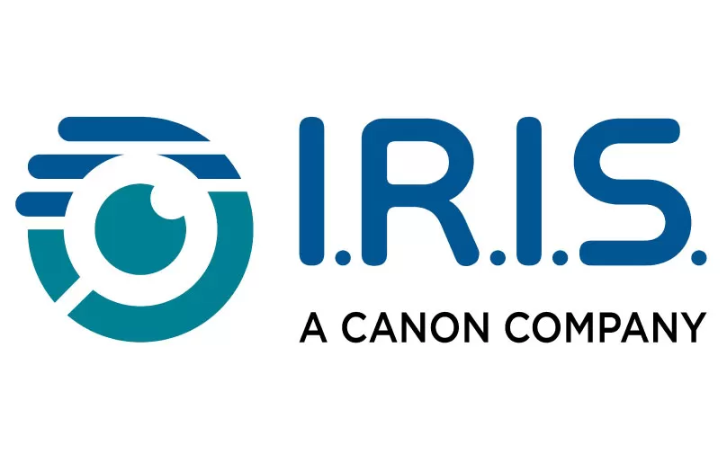

Célestin Matte
DevOps System Administrator


I'm a freelance devops system administrator. I deploy and migrate infrastructures in an automated, documented, and trackable way using Ansible, git and Docker. I ensure resiliency of your systems through monitoring, redundancy and fast automatic redeployment!
I've been passionately maintaining Linux infrastructures for 8 years in personal and professional contexts, and for associations. This brings me a long-term experience of system administration and incidents management. I have an engineering degree and a PhD, which give me both autonomy and efficiency. I often work in international environments.
- migrating services to cloud systems,
- setting up automated backup systems,
- setting up an alerting system of your servers,
- setting up a CI/CD pipeline,
- setting up new services (web, mail, visioconference...),
- updating your certificates.
Strasbourg, France
Software in the Public Interest
DevOps Sysadmin
-
Migrate running systems to up-to-date and maintained cloud-based servers or services:
- Migration of systems to Google Cloud Engine :
- websites
- mailing lists (mailman)
- mail servers (postfix/exim)
- Migration of git servers under gitolite to Gitlab.
- Google Workspace configuration.
- DNS zones transfer from Mythic Beasts to Gandi, communication with associated projects.
- Adding monitoring and backup solutions.
- Writing documentation.
- Rewriting a Flask web application in Django.
- Write Ansible script to install open source mailing list software PGLister, work on patches with upstream.
- Configure SPF, DKIM and DMARC.
- Key challenges: Autonomy, work with maintainer of open source project
- Technologies: Ansible, Google Cloud Engine, Gandi, Postfix, Django, Gitlab

IRIS (Canon group)
System administrator
-
Manage ~50 Linux servers:
- Upgrade all servers
- Implement security measures
- Debug issues and critical crashes
- Introduce automation with Ansible
- Update documentation
- Communicate with teams to get information and recover accesses
- Key challenges: Autonomy, urgent fixes, security
- Technologies: Debian, Ubuntu, CentOS, Fedora, Ansible, Bash, Apache, OpenVPN, Samba
Demo Wi-Fi tracking system
-
Installation of a Wi-Fi tracking demonstration prototype:
- Development of the Wi-Fi tracking software
- Configuration of a minimal Arch Linux system
- Development of Ansible scripts to handle the different possible deployments scenarios
- Configuration of dhcpd for the network of ~15 machines to deploy and configure automatically
- Minimize risk of system crashes and hardware faults
- Deployments:
- Cité des Sciences et de l'Industrie (11 months)
- CITI laboratory showroom
- CNIL Linc showroom
-
Key challenges:
- Availability of a system running in autonomy for several months
- fully automatic self-deployment and configuration of the network of ~15 machines
- Technologies: Arch Linux, dhcpd, Ansible, Python
Running a video game for a year
-
Adapting and running a video game (Sistexpress) for a year (~50 players):
- Rewriting a web PHP game into a fast-paced version.
- Improving the interface with Ajax.
- Monitoring CPU consumption and profiling code for optimization.
- Configuring automatic backups.
- Community management.
-
Key challenges:
- Availability
- Controlling CPU consumption
- Technologies: Ubuntu, Apache, PHP, PHP-FPM, MariaDB, nmon, Symfony, Ajax
Scientific contributions
PhD thesis presentation

The slides of my PhD defense on Wi-Fi tracking. The introduction is written to be understandable by a large public.
Cookie banners study

Are IAB Europe's TCF's cookie banners compliant with the law?
Articles

Published technical press articles (in French)